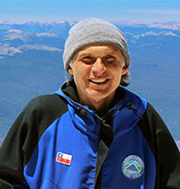
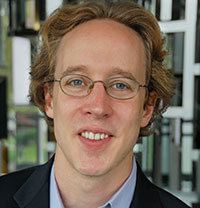
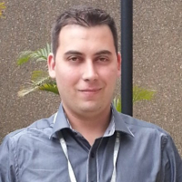

Program
Important:
Room 1000 is located in Escola de Ciência da Informação (ECI)
Rooms C314, C407, C412 and C504 and the auditoriums 1 and 2 are located in the Social Sciences Teaching Activities Center (CAD2)
| Monday | Tuesday | Wednesday | Thursday | ||||||||||
|---|---|---|---|---|---|---|---|---|---|---|---|---|---|
| 08:30-09:00 | ST1 A1 |
ST2 A2 |
ST5 A1 |
ST7 A2 |
wfc A1 |
FSC A2 |
MC3 C407 |
MC2 C412 |
|||||
| 09:00-09:30 | ST1 A1 |
ST2 A2 |
ST5 A1 |
ST7 A2 |
wfc A1 |
FSC A2 |
MC3 C407 |
MC2 C412 |
|||||
| 09:30-10:00 | Reception – Registration | ST1 A1 |
ST2 A2 |
ST5 A1 |
ST7 A2 |
wfc A1 |
FSC A2 |
MC3 C407 |
MC2 C412 |
||||
| 10:00-10:30 | Reception – Registration | ST1 A1 |
ST2 A2 |
ST5 A1 |
ST7 A2 |
wfc A1 |
FSC A2 |
MC3 C407 |
MC2 C412 |
||||
| 10:30-11:00 | CTD A1 |
WTICG C407 |
Coffee Break | Coffee Break | Coffee Break | ||||||||
| 11:00-11:30 | CTD A1 |
WTICG C407 |
Keynotes Marcus Lahr CERT.br/NIC.br A1 |
Keynotes Rodrigo Branco (Intel) A1 |
wfc A1 |
FSC A2 |
MC3 C407 |
MC2 C412 |
|||||
| 11:30-12:00 | CTD A1 |
WTICG C407 |
Keynotes Alex Halderman II A1 |
Keynotes Rodrigo Branco (Intel) A1 |
wfc A1 |
FSC A2 |
MC3 C407 |
MC2 C412 |
|||||
| 12:00-12:30 | CTD A1 |
WTICG C407 |
Keynotes Alex Halderman II A1 |
Keynotes Rodrigo Branco (Intel) A1 |
wfc A1 |
FSC A2 |
MC3 C407 |
MC2 C412 |
|||||
| 12:30-13:00 | Lunch | Lunch | Lunch | Lunch | |||||||||
| 13:00-13:30 | Lunch | Lunch | Lunch | Lunch | |||||||||
| 13:30-14:00 | Lunch | Lunch | Lunch | Lunch | |||||||||
| 14:00-14:30 | CTD A1 |
WTE A2 |
WTICG C407 |
MC4 C504 |
ST3 A1 |
ST4 A2 |
ST6 A1 |
ST8 A2 |
WGID A1 |
FSC A2 |
MC1 C314 |
WFC 1000 |
|
| 14:30-15:00 | CTD A1 |
WTE A2 |
WTICG C407 |
MC4 C504 |
ST3 A1 |
ST4 A2 |
ST6 A1 |
ST8 A2 |
WGID A1 |
FSC A2 |
MC1 C314 |
WFC 1000 |
|
| 15:00-15:30 | CTD A1 |
WTE A2 |
WTICG C407 |
MC4 C504 |
ST3 A1 |
ST4 A2 |
ST6 A1 |
ST8 A2 |
WGID A1 |
FSC A2 |
MC1 C314 |
WFC 1000 |
|
| 15:30-16:00 | CTD A1 |
WTE A2 |
WTICG C407 |
MC4 C504 |
ST3 A1 |
ST4 A2 |
ST6 A1 |
ST8 A2 |
WGID A1 |
FSC A2 |
MC1 C314 |
WFC 1000 |
|
| 16:00-16:30 | Coffee Break | Coffee Break | Coffee Break | Coffee Break | |||||||||
| 16:30-17:00 | CTD A1 |
WTE A2 |
WTICG C407 |
MC4 C504 |
Keynotes René Peralta A1 |
Keynotes Pascal Urien A1 |
WGID A1 |
FSC A2 |
MC1 C314 |
WFC 1000 |
|||
| 17:00-17:30 | CTD A1 |
WTE A2 |
WTICG C407 |
MC4 C504 |
Keynotes René Peralta A1 |
Keynotes Pascal Urien A1 |
WGID A1 |
FSC A2 |
MC1 C314 |
WFC 1000 |
|||
| 17:30-18:00 | MC4 C504 |
Keynotes René Peralta A1 |
Keynotes Pascal Urien A1 |
WGID A1 |
FSC A2 |
MC1 C314 |
WFC 1000 |
||||||
| 18:00-18:30 | Keynotes Alex Halderman I A1 |
WGID A1 |
FSC A2 |
WFC 1000 |
|||||||||
| 18:30-19:00 | Keynotes Alex Halderman I A1 |
CESeg/SBC Meeting A1 |
UFMG: Out to Dinner | ||||||||||
| 19:00-19:30 | Opening Ceremony | CESeg/SBC Meeting A1 |
San Diego Hotel: Out to Dinner |
||||||||||
| 19:30-20:00 | Cocktail Reception | CESeg/SBC Meeting A1 |
Symposium Dinner | ||||||||||
| 20:00-20:30 | Cocktail Reception | Symposium Dinner | |||||||||||
| 20:30-21:00 | Cocktail Reception | Symposium Dinner | |||||||||||
| 21:00-21:30 | Cocktail Reception | Symposium Dinner (...) | |||||||||||
Key
- MC - Tutorials
- CSeg - Security Committee Meeting
- WFC - Workshop on Computational Forensics
- WGID - Workshop Digital Identity Management
- WTICG - Workshop on Scientific Initiation and Undergraduate Papers
- WTE - Workshop on Election Technology
- ST - SBSeg Technical Session
- PI - International Guest Speaker
- FSC - Forum on Corporate Security
- CTD - Thesis and Dissertation Contest
Best Papers and Reviewers
Technical Sessions
Best Paper
| Title | Authors |
|---|---|
| SpamBands: uma metodologia para identificação de fontes de spam agindo de forma orquestrada |
Elverton Fazzion (UFMG - Brazil)Pedro Henrique Bragioni Las Casas (UFMG - Brazil)Osvaldo Luis Fonseca (UFMG - Brazil)Dorgival Guedes (UFMG - Brazil)Wagner Meira Jr. (UFMG - Brazil)Cristine Hoepers (NIC.br - Brazil)Klaus Steding-Jessen (NIC.br - Brazil)Marcelo Chaves (NIC.br - Brazil) |
Runner-up
| Title | Authors |
|---|---|
| Controlando a Frequência de Desvios Indiretos para Bloquear Ataques ROP |
Mateus Ferreira (UFAM - Brazil)Eduardo Feitosa (UFAM - Brazil)Ailton Santos (UFAM - Brazil) |
CTDSeg
Master's
Best Paper
| Title | Authors |
|---|---|
Proposta de Aprimoramento para o Protocolo de Assinatura Digital Quartz |
Ewerton Andrade (Universidade de São Paulo)
|
Runner-up
| Title | Authors |
|---|---|
| Emparelhamentos e Reticulados: Estado-da-Arte em Algoritmos e Parâmetros para as Famílias mais Flexíveis de Sistemas Criptográficos | Jefferson Ricardini (Universidade de São Paulo) Paulo Barreto (Universidade de São Paulo) |
| Segurança em Redes-em-Chip: Mecanismos para Proteger a Rede SoCIN contra Ataques de Negação de Serviço | Sidnei Baron (Universidade do Vale do Itajaí) Michelle Wangham (Universidade do Vale do Itajaí) Cesar Zeferino (Universidade do Vale do Itajaí) |
Doctorate
Best Paper
| Title | Authors |
|---|---|
| Two Approaches for Achieving Efficient Code-Based Cryptosystems | Rafael Misoczki (Universidade de São Paulo) Nicolas Sendrier (INRIA Paris-Rocquencourt) |
Runner-up
| Title | Authors |
|---|---|
| Avaliação Resiliente de Autorização UCONabc para Computação em Nuvem | Arlindo L. Marcon Jr. (Instituto Federal do Paraná) Altair Santin (Pontifícia Universidade Católica do Paraná) |
| Malware Behavior | André Ricardo Abed Grégio (CTI Renato Archer) Mario Jino (Universidade Estadual de Campinas) Paulo de Geus (Universidade Estadual de Campinas) |
WTICG
Best Paper
| Title | Authors |
|---|---|
| Análise de Segurança de Conversores Serial-Ethernet e Microcontroladores Tibbo | Ildomar Gomes de Carvalho Junior (UDESC - Brazil) Rafael Obelheiro (UDESC - Brazil) |
Runner-up
| Title | Authors |
|---|---|
| Esteno: Uma Abordagem para Detecção Visual de Bankers | Victor Furuse Martins (UNICAMP - Brazil) André Abed Grégio (CenPRA/MCT - Brazil) Vitor Afonso (UNICAMP - Brazil) Paulo de Geus (University of Campinas - Brazil) |
| Implementação do esquema totalmente homomórfico sobre inteiros de chave reduzida | Luan Santos (Centro Universitario Euripedes de Marilia - Brazil) Guilherme Rodrigues Bilar (Centro Universitario Euripedes de Marilia - Brazil) Fabio Pereira (UNIVEM - Brazil) |
Best Reviewers
| Best Reviewer |
|---|
| Marcos Simplício (Poli-USP - Brazil) |
| Runner-up |
Mário S. Alvim (UFMG - Brazil)Paulo S. L. M. Barreto (Poli-USP - Brazil) |
Program (Papers):
Full Papers - Technical Program
ST 1 - Acess Control
Tuesday: 8:30 am - 10:00 am
| Title | Authors |
|---|---|
| Controle de acesso baseado em reencriptação por proxy em Redes Centradas em Informação |
Elisa Mannes (UFPR - Brazil)Carlos Maziero (UTFPR - Brazil)Luiz Carlos Lassance (CONFESOL - Brazil)Fábio Borges (LNCC - Brazil) |
| Protocolo para transferência parcial de conhecimento e sua aplicação à verificação segura de marcas d'água |
Raphael Machado (INMETRO - Brazil)Davidson Boccardo (INMETRO - Brazil)Vinícius Pereira de Sá (UFRJ - Brazil)Jayme Szwarcfiter (UFRJ - Brazil) |
| A randomized graph-based scheme for software watermarking |
Lucila Bento (UFRJ - Brazil)Davidson Boccardo (INMETRO - Brazil)Raphael Machado (INMETRO - Brazil)Vinícius Pereira de Sá (UFRJ - Brazil)Jayme Szwarcfiter (UFRJ - Brazil) |
ST 2 - Application Security I
Tuesday: 08:30 am - 10:00 am
| Title | Authors |
|---|---|
| Esquema de Estruturação SbC-EC para Log Seguro |
Sérgio de Medeiros Câmara (UFRJ - Brazil)Luiz Fernando Rust da Costa Carmo (UFRJ - Brazil)Luci Pirmez (UFRJ - Brazil) |
| Controlando a Frequência de Desvios Indiretos para Bloquear Ataques ROP |
Mateus Ferreira (UFAM - Brazil)Eduardo Feitosa (UFAM - Brazil)Ailton Santos (UFAM - Brazil) |
| Segurança no Sensoriamento e Aquisição de Dados de Testes de Impacto Veiculares |
Wilson Melo Jr (INMETRO - Brazil)Luiz Fernando Rust da Costa Carmo (UFRJ - Brazil)Charles Prado (INMETRO - Brazil)Paulo Roberto Nascimento (INMETRO - Brazil)Luci Pirmez (UFRJ - Brazil) |
ST 3 - Encryption
Tuesday: 2:00 pm - 4:00 pm
| Title | Authors |
|---|---|
| Attacks on single-pass confidentiality modes of operation |
Jorge Nakahara Junior (Brazil)Olivier Markowitch (Université Libre de Bruxelles - Belgium) |
| Efficient variants of the GGH-YK-M cryptosystem |
Joao Barguil (USP - Brazil)Renan Yuri Lino (USP - Brazil)Paulo Barreto (USP - Brazil) |
| Expanding a Lattice-based HVE Scheme |
Karina Mochetti (UNICAMP - Brazil)Ricardo Dahab (UNICAMP - Brazil) |
| A comparison of simple side-channel analysis countermeasures for variable-base elliptic curve scalar multiplication |
Erick Nascimento (UNICAMP - Brazil)Rodrigo Abarzúa (Universidad de Santiago de Chile - Chile)Julio López (UNICAMP - Brazil)Ricardo Dahab (UNICAMP - Brazil) |
ST 4 - Network Security
Tuesday: 2:00 pm - 4:00 pm
| Title | Authors |
|---|---|
| Sistema Indicador de Resiliência na Conectividade de Redes Heterogêneas sem fio |
Robson Gomes de Melo (UFPR - Brazil)Michele Nogueira (UFPR - Brazil)Aldri dos Santos (UFPR - Brazil) |
| Um Sistema de Detecção de Ataques Sinkhole sobre 6LoWPAN para Internet das Coisas |
Christian Alonso (UFPR - Brazil)Diego Poplade (UFPR - Brazil)Michele Nogueira (UFPR - Brazil)Aldri dos Santos (UFPR - Brazil) |
| Identificação e Caracterização de Comportamentos Suspeitos Através da Análise do Tráfego DNS |
Eduardo Souto (UFAM - Brazil)Kaio Barbosa (UFAM - Brazil)Eduardo Feitosa (UFAM - Brazil)Gilbert Martins (UFAM - Brazil) |
| Um Mecanismo Agregador de Atributos Mediado pelo Cliente Alinhado ao Programa de EGOV.BR |
Marcondes Maçaneiro (UNIDAVI - Brazil)Fábio Zoz (UNIDAVI - Brazil)Michelle Wangham (UNIVALI - Brazil) |
ST 5 - Attack Detection and Prevention
Wednesday: 08:00 am - 10:00 am
| Title | Authors |
|---|---|
| Monitoração de comportamento de malware em sistemas operacionais Windows NT 6.x de 64 bits |
Marcus Botacin (UNICAMP - Brazil)Vitor Afonso (UNICAMP - Brazil)Paulo de Geus (UNICAMP - Brazil)André Ricardo Abed Grégio (CTI Renato Archer - Brazil) |
| Prevenção de Ataques em Sistemas Distribuídos via Análise de Intervalos |
Vitor Paisante (UFMG - Brazil)Luiz Saggioro (UFMG - Brazil)Raphael Rodrigues (UFMG - Brazil)Leonardo Oliveira (UFMG - Brazil)Fernando Quintao Pereira (UFMG - Brazil) |
| Detecção de Dados Suspeitos de Fraude em Organismos de Inspeção Acreditados |
Rosembergue Souza (UFRJ - Brazil)Luiz Fernando Rust da Costa Carmo (UFRJ - Brazil)Luci Pirmez (UFRJ - Brazil) |
| Estruturas Virtuais e Diferenciação de Vértices em Grafos de Dependência para Detecção de Malware Metamórfico |
Gilbert Martins (UFAM - Brazil)Eduardo Souto (UFAM - Brazil)Rosiane de Freitas (IComp/UFAM - Brazil)Eduardo Feitosa (UFAM - Brazil) |
ST 6 - Application Security II
Wednesday: 2:00 pm - 4:00 pm
| Title | Authors |
|---|---|
| An Ontological Approach to Mitigate Risk in Web Applications |
Marcius Marques (UNB - Brazil)Celia Ralha (UNB - Brazil) |
| SpamBands: uma metodologia para identificação de fontes de spam agindo de forma orquestrada |
Elverton Fazzion (UFMG - Brazil)Pedro Henrique Bragioni Las Casas (UFMG - Brazil)Osvaldo Luis Fonseca (UFMG - Brazil)Dorgival Guedes (UFMG - Brazil)Wagner Meira Jr. (UFMG - Brazil)Cristine Hoepers (NIC.br - Brazil)Klaus Steding-Jessen (NIC.br - Brazil)Marcelo Chaves (NIC.br - Brazil) |
| CloudSec - Um Middleware para Compartilhamento de Informações Sigilosas em Nuvens Computacionais |
Rick Lopes de Souza (UFSC - Brazil)Hylson Netto (UFSC - Brazil)Lau Cheuk Lung (UFSC - Brazil)Ricardo Custódio (UFSC - Brazil) |
| Análise de cerimônias no sistema de votação Helios |
Taciane Martimiano (UFSC - Brazil)Jean Martina (UFSC - Brazil)Maina Olembo (TU Darmstadt - Germany) |
Extended Abstracts - Technical Program
ST 7
Wednesday: 8:00 am - 10:00 am
| Title | Authors |
|---|---|
| SIMO: Security Incident Management Ontology |
Pâmela Silva (UNISINOS - Brazil)Leonardo Lemes Fagundes (UNISINOS - Brazil) |
| S-MOVL: Protegendo Sistemas Computacionais contra Ataques de Violação de Memória por meio de Instruções em Hardware |
Antonio Maia (UFMG - Brasil)Omar Vilela Neto (UFMG - Brasil)Fernando Pereira (UFMG - Brasil)Leonardo Oliveira (UFMG - Brasil) |
| Arquitetura de monitoramento para Security-SLA em Nuvem Computacional do tipo SaaS |
Carlos da Silva (UNICAMP - Brasil)Paulo de Geus (UNICAMP - Brasil) |
| Detecção Estática e Consistente de Potenciais Estouros de Arranjos |
Bruno Rodrigues Silva (UFMG - Brasil) |
| Um Mecanismo Simples e Eficiente para a Autenticação de Dispositivos na Comunicação por Campo de Proximidade |
Silvio Quincozes (UNIPAMPA - Brasil)Juliano Kazienko (UNIPAMPA - Brasil) |
| Comparison of the cost/benefit of techniques used to provide privacy in cloud computing |
Vitor Hugo Galhardo Moia (UNICAMP - Brasil)Marco Aurelio Amaral Henriques (UNICAMP - Brasil) |
ST 8
Wednesday: 2:00 pm - 4:00 pm
| Title | Authors |
|---|---|
| Decentralized management of One-Time Pad key material for a group |
Jeroen van de Graaf (UFMG - Brazil) |
| Software implementation of SHA-3 family using AVX2 |
Roberto Cabral (UNICAMP - Brasil)Julio López (UNICAMP - Brasil) |
| A True Random Number Generator based on quantum-optical noise |
André Ruegger (UFMG - Brazil)Geraldo Barbosa (QuantaSEC - Brazil)Jeroen van de Graaf (UFMG - Brasil)Gilberto Medeiros (UFMG - Brazil)Julio Cezar de Melo (UFMG - Brazil)Roberto Nogueira (UFMG - Brazil)Wagner Rodrigues (UFMG - Brazil)Fernando Nunes (UFMG - Brazil) |
| On Software Implementation of Arithmetic Operations on Prime Fields using AVX2 |
Julio López (UNICAMP - Brasil)Armando Faz-Hernández (UNICAMP - Brasil) |
| Autenticação contínua para smartphones baseada em assinatura acústica |
Marcelo da Luz Colome (UFSM - Brasil)Raul Ceretta Nunes (UFSM - Brasil) |
CTDSeg
Detailed Program
Master's
| Title | Authors | Program |
|---|---|---|
| Segurança em Redes-em-Chip: Mecanismos para Proteger a Rede SoCIN contra Ataques de Negação de Serviço | Sidnei Baron (Universidade do Vale do Itajaí - Brazil) Michelle Wangham (Universidade do Vale do Itajaí - Brazil) Cesar Zeferino (Universidade do Vale do Itajaí - Brazil) |
10:30 |
| Proposta de aprimoramento para o protocolo de assinatura digital Quartz | Ewerton Andrade (University of São Paulo - Brazil) Routo Terada (University of São Paulo - Brazil) |
10:55 |
| TwinBFT: Tolerância a Faltas Bizantinas com Máquinas Virtuais Gêmeas | Fernando Dettoni (PPGCC-UFSC - Brazil) Lau Cheuk Lung (UFSC - Brazil) |
14:00 |
| Emparelhamentos e reticulados: estado-da-arte em algoritmos e parâmetros para as famílias mais flexíveis de sistemas criptográficos | Jefferson Ricardini (University of Sao Paulo - Brazil) Paulo Barreto (USP - Brazil) |
14:25 |
| Autenticação e comunicação segura em dispositivos móveis de poder computacional restrito | Rafael Will Macedo de Araujo (Universidade de São Paulo - Brazil) Routo Terada (University of São Paulo - Brazil) |
16:30 |
Doctorate
| Title | Authors | Program |
|---|---|---|
| Addressing human factors in the design of cryptographic solutions: a two-case study in item validation and authentication |
Fabio Piva (University of Campinas - Brazil) Ricardo Dahab (University of Campinas - Brazil) |
11:20 |
| Avaliação Resiliente de Autorização UCONabc para Computação em Nuvem | Arlindo L. Marcon Jr. (Instituto Federal do Paraná - IFPR - Brazil) Altair Santin (Pontifícia Universidade Católica do Paraná / Pontifical Catholic University of Parana (PUCPR) - Brazil) |
11:55 |
| Illumination Inconsistency Sleuthing for Exposing Fauxtography and Uncovering Composition Telltales in Digital Images |
Tiago Jose de Carvalho (Universidade Estadual de Campinas - Brazil) Helio Pedrini (Universidade Estadual de Campinas - Brazil) Anderson Rocha (University of Campinas (UNICAMP) - Brazil) |
14:50 |
| Two Approaches for Achieving Efficient Code-Based Cryptosystems |
Rafael Misoczki (University of São Paulo - Brazil) Nicolas Sendrier (INRIA Paris-Rocquencourt - France) |
15:25 |
| Malware Behavior |
André Ricardo Abed Grégio (CTI Renato Archer - Brazil) Mario Jino (FEEC-UNICAMP - Brazil) Paulo de Geus (University of Campinas - Brazil) |
16:55 |
Tutorials
MC1
| Title | Authors | Abstract |
|---|---|---|
| MC1: Tolerância a Faltas e Intrusões para Sistemas de Armazenamento de Dados em Nuvens Computacionais. |
Lau Cheuk Lung (UFSC) (apresentador)Hylson Vescovi Netto (UFSC)Rick Lopes de Souza (UFSC) |
O objetivo deste minicurso é mostrar o estado da arte em sistemas de armazenamento nas nuvens que sejam tolerantes a faltas e intrusões. Para isto, serão apresentados conceitos, técnicas e mecanismos que dão suporte aos protocolos e arquiteturas existentes na literatura. De início, serão abordadas características e benefícios das nuvens de armazenamento atualmente disponíveis, apresentando ao participante do minicurso as nuvens comerciais mais utilizadas. Entre as características, destacam-se os tipos de dados que são suportados pelas nuvens públicas, bem como a possibilidade de realizar processamento sobre os dados na própria nuvem que os armazena, o que resulta na criação de aplicações mais elaboradas; o participante então terá visão das potenciais utilizações da nuvem para o armazenamento. Concluída a visão geral, será feita uma problematização referente a ameaças e vulnerabilidades que podem comprometer o funcionamento dos sistemas de armazenamento nas nuvens, onde o participante compreenderá as lacunas de segurança atualmente existentes nas nuvens. Será também apresentado como os provedores de nuvens lidam com os problemas mais comuns, onde então o participante compreenderá como alguns problemas são resolvidos na prática. A questão de confidencialidade será abordada, mostrando aos participantes como os provedores de nuvens tratam a privacidade do dado armazenado, desde a simples utilização de criptografia até o gerenciamento das chaves criptográficas. Serão apresentadas também estratégias de fragmentação de dados, onde o participante conhecerá as técnicas mais utilizadas e quais suas implicações sobre o dado armazenado. Finalmente, serão apresentados os trabalhos mais relevantes e recentes que realizam armazenamento nas nuvens, onde o participante conhecerá novos protocolos e arquiteturas, bem como os problemas de armazenamento que continuam abertos para pesquisa. |
MC2
| Title | Authors | Abstract |
|---|---|---|
| MC2: Device Fingerprint: Conceitos e Técnicas, Exemplos e Contramedidas |
Adriana Rodrigues Saraiva (UFAM) (apresentadora)Pablo Augusto da Paz Elleres (UFAM)Guilherme de Brito Carneiro (UFAM)Eduardo Luzeiro Feitosa (UFAM) (apresentador) |
De acordo com a RFC 6973 fingerprint é o processo pelo qual um observador ou atacante identifica, de maneira única e com alta probabilidade, um dispositivo ou uma instância de um aplicativo com base em um conjunto de informações. No contexto da Internet, técnicas de fingerprint são aquelas empregadas para identificar (ou re-identificar) um usuário ou um dispositivo através de um conjunto de atributos (tamanho da tela do dispositivo, versões de softwares instalados, entre muitos outros) e outras características observáveis durante processo de comunicação. Tais técnicas, também conhecidas como machine fingerprint, browser fingerprint e web-based device fingerprint, podem ser usadas como medida de segurança (por exemplo, na autenticação de usuários e no monitoramento das atividades de navegação de um usuário dentro e através de sessões) e como mecanismo para vendas, já que a coleta de informações permite inferir preferências e hábitos de usuários na Web e ser empregada na recomendação de serviços e produtos. Infelizmente, também podem ser consideradas uma ameaça potencial a privacidade Web dos usuários, uma vez que dados pessoais e sigilosos podem ser capturados e em empregados para fins maliciosos no mais variados tipos de ataque e fraudes. Este minicurso apresenta os conceitos e as técnicas de device fingerprint que permitem obter dados relativos aos usuários e seus dispositivos. |
MC3
| Title | Authors | Abstract |
|---|---|---|
| MC3: Botnets: Características e Métodos de Detecção Através do Tráfego de Rede |
Kaio R. S. Barbosa (UFAM) (apresentador)Eduardo Souto (UFAM)Eduardo Feitosa (UFAM)Gilbert Martins (UFAM) |
O monitoramento e análise passiva permitem identificar padrões de comunicação suspeitos de máquinas infectadas (bots) no tráfego de rede. Tais hosts frequentemente estão associados a redes de computadores maliciosas (botnets) utilizadas para proliferação de códigos maliciosos (vírus e worms) e ataques de negação de serviço (DDoS, do inglês Distributed Denial of Service). Pesquisadores têm utilizado técnicas de engenharia reversa do binário malicioso para mitigar esse tipo de aplicação, no entanto, à medida que soluções são criadas para facilitar a engenharia reversa, atacantes desenvolvem novos mecanismos para dificultar tal análise. Portanto, análise passiva é uma alternativa viável para encontrar comportamentos suspeitos no tráfego de rede desconhecidos (zero-day), ou quando um worm ainda não foi totalmente explorado pelas técnicas de engenharia reversa. Este minicurso apresenta as estratégias utilizadas para detecção de botnets através da análise passiva do tráfego de rede. |
Instructions for MC3 participants
MC4
| Title | Authors | Abstract |
|---|---|---|
| MC4: Segurança em Redes Veiculares: Inovações e Direções Futuras |
Michelle S. Wangham (UNIVALI) (apresentadora)Michele Nogueira (UFPR) (apresentadora)Cláudio Fernandes (UNIVALI)Osmarildo Paviani (UNIVALI)Benevid Silva (UFPR) |
O objetivo deste minicurso é, diante das recentes pesquisas a cerca das inovações das redes veiculares, analisar os desafios de segurança e as principais contramedidas descritas em trabalhos acadêmicos. Pretende-se com este minicurso, contribuir para um melhor entendimento das ameaças e ataques em ambientes veiculares e das possíveis contramedidas, analisando as questões chaves de autenticação de usuários e veículos versus privacidade, ataques de nós maliciosos e novos ataques decorrentes do uso da computação em nuvem e dos modelos da Internet do Futuro. Neste curso, será dado um enfoque nos conceitos, problemas e soluções tecnológicas encontrados na literatura nos últimos cinco anos. Complementando esta abordagem conceitual, dois estudos de casos (aplicações inovadoras de redes veiculares) serão analisados para demonstrar os possíveis ataques e contramedidas que podem ser empregadas para minimizá-los. |
WTICG
Session 1 - Network and Computer Systems Security
Schedule: 10:30 am - 12:30 am
| Title | Authors | Abstract |
|---|---|---|
| Análise de Segurança de Conversores Serial-Ethernet e Microcontroladores Tibbo | Ildomar Gomes de Carvalho Junior (Universidade do Estado de Santa Catarina - Brazil), Rafael Obelheiro (UDESC - Brazil) | Microcontroladores e conversores serial-Ethernet são utilizados em sistemas de controle industrial para a comunicação e controle de diversos dispositivos. O funcionamento incorreto de microcontroladores e conversores pode acarretar danos em equipamentos e/ou no processo de manufatura de produtos, trazendo riscos até mesmo para a integridade física de pessoas que operam máquinas que dependem desses sistemas embarcados. A crescente integração de microcontroladores e conversores à Internet e o aumento de vulnerabilidades e incidentes envolvendo sistemas de controle industriais fazem com que a segurança desses dispositivos se torne um atributo cada vez mais importante. Este artigo apresenta o uso de técnicas de injeção de faltas através da rede para avaliar a segurança da pilha TCP/IP do microcontrolador e conversor serial-Ethernet Tibbo EM1206. O processo seguido nesta avaliação pode ser utilizado para a condução de avaliações similares. |
| Um Mecanismo de Segurança para o Protocolo HTR | Gregório Correia (Federal University of Pernnambuco - Brazil), Eduardo Feitosa (Universidade Federal do Amazonas - Brazil), Djamel Fawzi Hadj Sadok (Universidade Federal de Pernambuco (UFPE) - Brazil) | Segurança de dados tornou-se um requisito essencial para todo e qualquer sistema em rede, para as redes adhoc isso não seria diferente. Entre a gama de protocolos existentes não há foco na proteção dos dados que trafegam. O Heterogeneous Technologies Routing (HTR) foi um protocolo desenvolvido que provê um roteamento eficiente de dados com o menor consumo energético, porém seus dados trafegam em claro entre os elementos que compõem a rede. Este trabalho tem como foco avaliar o impacto causado por um sistema de segurança sobre a rede adhoc móvel HTR. |
| Uma análise do Impacto do Intervalo de Tempo de Captura do Acelerômetro na Biometria baseada em gestos em dispositivos móveis usando Android | Paulo Dreher (Universidade do Vale do Rio do Sinos - Brazil), Luciano Ignaczak (UNISINOS - Brazil) | The application of behavioural biometrics for authentication in mobile devices has been demonstrated in several studies, which show the feasibility of using gestures for authenticating users in a system. However, no attention has been given to the way the movement is done and the period between capture points of a gesture. This paper aims to analyse the security of different intervals capture of an accelerometer coordinates applied to biometrics gestures on mobile devices. The analysis of the intervals was conducted through an experiment, based on an Android application, where two types of movements and three different capture intervals were executed. The findings demonstrate that reducing the capture interval accelerometer increases the safety of the use of biometrics by gestures. The results also highlight the importance of using complex movements to make the authentication process less susceptible to attacks. |
| Aplicações Seguras no uso de QR Code: Dois Estudos de Caso | Eduardo Costa (Instituto Federal do Espirito Santo - IFES - Brazil), Jefferson Andrade (Instituto Federal do EspÃ-rito Santo - Brazil), Karin Komati (Ifes Campus Serra - Brazil) | QR Codes facilitam a navegação de usuários em seus dispositivos móveis, entretanto, esta estratégia pode expor os usuários e o próprio sistema a diversos tipos de ataques, tais como: fraudes, sites clonados e injeção SQL. Portanto, estratégias de segurança devem ser adotadas para evitar prejuízos. Neste contexto, o objetivo deste trabalho é apresentar propostas de utilização segura do QR Code. Este trabalho apresenta duas aplicações, a primeira é um sistema de associação entre documentos digitais e impressos que utiliza a verificação do resumo hash dos documentos para manter a integridade da associação e, a segunda um sistema de m-commerce que utiliza criptografia para manter o sigilo da entrada do sistema. Através dos resultados dos experimentos verificou-se que as duas estratégias de segurança propostas são eficazes quando existe um QR Code malicioso, tornando a utilização deste código gráfico mais segura e confiável. |
| Implementação em Hardware de Instrução Segura de Acesso à Memória - Caso MIPS 16 bit | Eric Torres (Universidade Federal de Minas Gerais - Brazil), Antonio Maia (Student UFMG - Brazil), Omar Vilela Neto (Universidade Federal de Minas Gerais - Brazil), Leonardo Barbosa (UFMG - Brazil) | Algumas linguagens não possuem mecanismos de segurança. Isso faz com que diversos programas estejam vulneráveis a ataques. Um ataque bastante comum é o Buffer Overflow. Existem diversas propostas de solução para esse problema. Mas, em sua grande maioria, essas soluções são implementadas em software, gerando uma grande sobrecarga. Por isto, este trabalho propõe uma alternativa em hardware, capaz de realizar o acesso seguro à memória. Foi criado então a SSW, uma instrução segura de escrita à memória desenvolvida para a arquitetura MIPS 16 bit. |
Session 2 - Web Security
Schedule: 2:00 pm- 4:00 pm
| Title | Authors | Abstract |
|---|---|---|
| Esteno: Uma Abordagem para Detecção Visual de Bankers | Victor Furuse Martins (Universidade Estadual de Campinas - Brazil), André Abed Grégio (CenPRA/MCT - Brazil), Vitor Afonso (Universidade Estadual de Campinas - Brazil), Paulo de Geus (University of Campinas - Brazil) | Bankers-programas maliciosos para roubo de informações bancárias-geralmente usam janelas que imitam sites dos bancos reais para ludibriar os usuários. Isto e sua execução não intrusiva no sistema alvo dificultam a detecção e análise por sistemas automáticos não supervisionados. Neste artigo, apresenta-se uma proposta de solução para a identificação de bankers brasileiros. Para tanto, lança-se mão de três analisadores visuais (baseados em cores, na presença de logotipos conhecidos e no conteúdo dos textos) refinados por meio de aprendizado de máquina supervisionado (Random Forest). Testes com mais de 1.100 imagens extraídas de malware resultaram em 92,1% de exemplares corretamente classificados. |
| CAFe Expresso: Comunidade Acadêmica Federada para Experimentação usando Framework Shibboleth | Maykon de Souza (IFSC - Brazil), Emerson Ribeiro de Mello (Instituto Federal de Santa Catarina - Brazil), Michelle Wangham (Universidade do Vale do Itajaí - Brazil) | To perform research in Identity Management, the researcher needs a complete infrastructure with Identity Providers (IdPs) and Service Providers (SPs) so that it can conduct your experiments. The process to provide this kind of infrastructure is time-consuming and requires a thorough knowledge on the tools, which are limiting factors for researchers who only want to conduct researches in the area. The aim of this article is to describe the CAFe Expresso wich was implemented with the purpose to facilitate the development of research on identity management and for this provides an environment for experimentation based on the Shibboleth framework, composed of IdPs, SPs, Discovery Services (DS) and the uApprove service. |
| Estudo e Análise de Vulnerabilidades Web | Wagner Monteverde (Universidade Tecnológica Federal do Paraná - Brazil), Rodrigo Campiolo (Universidade Tecnológica Federal do Paraná - Brazil) | A segurança em aplicações Web é importante para prover a proteção aos clientes e serviços na Web. Inúmeras vulnerabilidades Web são exploradas a cada dia e os ataques tem se tornado mais frequentes devido a facilidade introduzida por ferramentas de exploração e pelo aumento de aplicações e o uso da Web. Neste trabalho é realizado o estudo e análise de vulnerabilidades em aplicações Web em diferentes tipos de aplicações. São usadas ferramentas para identificação de vulnerabilidades em uma amostra de sítios Web heterogêneos e brasileiros. Por consequência, foram investigadas as principais formas de ataques utilizadas em aplicações Web. Os resultados indicam a necessidade urgente de melhorias na segurança, principalmente em sítios Web menores e regionais. |
| Sistema de Gerenciamento de Identidades para a Rede Catarinense de Informações Municipais baseado no SAML | Emerson Souto (Universidade do Vale do Itajaí - Brazil), Marlon Domenech (Univali - Brazil), Michelle Wangham (Universidade do Vale do Itajaí - Brazil) | A Rede Catarinense de Informações Municipais (RedeCIM) integra diversos sistemas de apoio à gestão pública municipal. Tais sistemas utilizam diferentes mecanismos de autenticação e de autorização, fazendo com que os usuários precisem lidar com diferentes credenciais para cada sistema. Este trabalho descreve um sistema de IdM centralizado baseado no padrão SAML 2.0, que provê autenticação única alinhada aos requisitos da RedeCIM. A pesquisa de satisfação realizada atestou a aprovação dos usuários e gestores da RedeCIM e os testes de software evidenciam a viabilidade da solução, garantindo a IdM na RedeCIM. |
Session 3 - Information Security
Schedule: 4:30 pm - 5:30 pm
| Titles | Authors | Abstract |
|---|---|---|
| Implementação Eficiente de Algoritmos para Teste de Primalidade | Bruno Ribeiro (University of Brasília - Brazil), Diego Aranha (University of Campinas - Brazil) | O desenvolvimento da criptografia, em especial a criptografia de chave assimétrica, foi fator determinante para o crescimento e popularização das redes de computadores. Foi responsável pela viabilização de demandas como comércio e correio eletrônicos, assinaturas e certificações digitais. O uso adequado de técnicas criptográficas requer o desenvolvimento de implementações eficientes que sejam capazes de serem executadas em diversos tipos de dispositivos, que cada vez mais se incorporam à vida das pessoas. A geração de chaves criptográficas, por exemplo, é uma operação não só crítica quanto à segurança, mas também de alto custo computacional no algoritmo RSA. Este trabalho tem como objetivo estudar técnicas para teste de primalidade, elemento que compõe o núcleo do processo de geração de chaves nesse algoritmo. É dado enfoque na implementação, otimização e análise de desempenho do Teste de Frobenius Quadrático Simplificado, um teste de primalidade de 2005 e pouco explorado. As análises apontam uma eficiência 30% maior para inteiros de até 256 bits, resultados positivos quanto à viabilidade da redução do custo computacional da geração de números primos. |
| Implementação do esquema totalmente homomórfico sobre inteiros de chave reduzida | Luan Santos (Centro Universitario Euripedes de Marilia - Brazil), Guilherme Rodrigues Bilar (Centro Universitario Euripedes de Marilia - Brazil), Fabio Pereira (UNIVEM - Brazil) | Abstract: In this paper we implemented the fully homomorphic scheme with shoter key (DGVH with shorter key) proposed by Jean-Sébastian Coron, Avradip Mandal , David Naccache and Mehdi Tibouchi , which was published in the conference CRYPTO 2011, this same scheme can be compared with the Gentry's fully homomorphic scheme, being it a simpler fully homomorphic scheme, however this simplicity comes at the cost of the public key having an estimated size of ? , which according to Coron et al, makes it impossible to use in practical systems. The DGVH scheme over intergers with shorter public key decreases the size of the generated public key to ? , encrypting the information of the public key in a quadratic manner, instead of encrypting them in a linear way. To do so, programming languages like C + + and Python were used, with the library of mathematics and number theory GMPY2. |
| Análise dos Desafios para Estabelecer e Manter Sistema de Gestão de Segurança da Informação no Cenário Brasileiro | Rodrigo Fazenda (Universidade do Vale do Rio dos Sinos (Unisinos) - Brazil), Leonardo Fagundes (Universidade do Vale do Rio dos Sinos - Brazil) | O estabelecimento da norma ISO 27001 cresce entre as organizações em todo o mundo. Porém, diversos desafios são enfrentados pelas empresas para implementar esta norma. É escassa a quantidade de estudos sobre os desafios que empresas brasileiras enfrentam para estabelecer e manter o SGSI. Este artigo tem como objetivo identificar e analisar os desafios enfrentados para estabelecer e manter o SGSI no cenário nacional. Foi através do método de estudo de caso múltiplo que fatores como falta de apoio da direção, falta de capacitação da área de Segurança da Informação, influência da cultura local, falhas na análise de riscos e resistência á mudança foram identificados como obstáculos. |
WGID
Panel and Introductions
| Panel and Introductions | |
|---|---|
| 14:00 - 15:30 |
Painel: Gestão de Identidade Eletrônica e Identificação Civil no Brasil
|
| 15:30 - 15:40 |
Apresentação do Comitê Técnico de Gestão de Identidades da RNP
|
| 15:40 - 15:55 |
Apresentação do Laboratório de Gestão de Identidades (GIdLab) da RNP
|
Full Papers
| Full Papers | |
|---|---|
| 16:30 - 16:50 |
Controle de Acesso Baseado em Políticas e Atributos para Federações de Recursos
|
| 16:50 - 17:10 |
Um Estudo Comparativo de Estratégias Nacionais de Gestão de Identidades para Governo Eletrônico
|
| 17:10 - 17:30 |
Diagnóstico do governo eletrônico brasileiro - uma análise com base no modelo de gerenciamento de identidades e no novo guia de serviços
|
Short Papers
| Short Papers | |
|---|---|
| 17:30 - 17:45 |
Autenticação e Autorização em Federações de Nuvens
|
| 17:45 - 18:00 |
Um Estudo Sobre Autenticação Federada no Acesso a Recursos Computacionais por Terminal Remoto Seguro
|
| 18:00 - 18:15 |
Um Sistema de Controle de Acesso Utilizando Agentes e Ontologia
|
| 18:15 - 18:30 |
Armazenamento Distribuído de Dados Seguros para Efeito de Sistemas de Identificação Civil
|
WFC
Detailed Program
| Detailed Program | |
|---|---|
| 08:30 - 09:00 | Palestrante Convidado: Angelo Volpi Neto 7º. Tabelionato Volpi – Curitiba- PR “A imputação de Autoria em Documentos Digitais” |
| 09:00 - 09:30 | Artigo 1: Linux Remote Evidence Colector - Uma ferramenta de coleta de dados utilizando a metodologia Live Forensics Evandro Della Vecchia, Luciano Coral |
| 09:30 - 10:00 | Palestrante Convidado: Paulo Henrique Batimarchi IFPI – International Federation of the Phonographic Industry – São Paulo – SP "Adequação dos Marcos Jurídicos Regulatórios e seu impacto na Forense Computacional" |
| 10:00 - 10:30 | Artigo 2: Uso de Funções de Hash em Forense Computacional Marcos Corrêa Jr., Ruy José Guerra Barretto de Queiroz |
| 10:30 - 11:00 | Coffee Break |
| 11:00 - 11:30 | Artigo 3: NPDI Find Porn: Uma Ferramenta para Detecção de Conteúdo Pornográfico Ramon F. Pessoa, Edemir Ferreira de A. Junior, Carlos A. Caetano Junior, Silvio Jamil F. Guimarães, Jefersson A. dos Santos, Arnaldo de A. Araújo |
| 11:30 - 12:30 | Palestrante Convidado: Magnus Anseklev Micro Systemation “Mini Computadores” |
| 12:30 - 14:00 | Almoço |
| 14:00 - 14:30 | Artigo 4: Banco de Dados de Laudos Periciais de Dispositivos Móveis Alonso Decarli, Cicero Grokoski, Emerson Paraiso, Luiz Grochocki, Cinthia O. A. Freitas |
| 14:30 - 15:30 | Palestrante Convidado: Luiz Rodrigo Grochocki Perito Oficial Criminal da Polícia Científica do Estado do Paraná – Setor de Computação Forense “Procedimento Operacional Padrão para Pericia Criminal em Computação - POP/SENASP” |
| 15:30 - 16:00 | Artigo 5: Clonagem de Cartões Bancários Gustavo G. Parma, Amilton Soares Júnior |
| 16:00 - 16:30 | Coffee Break |
| 16:30 - 17:00 | Palestrante Convidado: Márjory da Costa-Abreu Pesquisadora do Imagina Lab (Imaging, Graphics, and Intelligent Agents Research Laboratory) da Universidade Federal do Rio Grande do Norte (UFRN) “Implications of ageing in biometrics system design” |
| 17:00 - 17:30 | Artigo 6: ZetaDnaCripto: Método de criptografia baseado em fitas de DNA Yasmmin C. Martins Instituto Militar de Engenharia (IME) |
| 17:30 - 18:00 | Encerramento |
Lecturers:
| Keynotes Title | Lecturer |
|---|---|
A imputação de Autoria em Documentos Digitais |
Angelo Volpi Neto é Tabelião, escritor, consultor, formado em Direito pela PUC-Pr., pós graduando em direito imobiliário. Professor convidado de pós graduação em direito eletrônico na Unicuritiba, PUC-Pr., UNISINOS-RS, UNICEMP-PR, entre outras. Autor dos livros: Comércio Eletrônico Direito e Segurança, Ed. Juruá e A VIDA EM BITS, Ed. Aduaneiras. Colunista e membro do Conselho Editorial da revista INFORMATION MANAGEMENT. Articulista, autor de centenas de ensaios, artigos e crônicas. Membro do Conselho Honorário da União Internacional do Notariado Latino. Roma –IT. É presidente do Colégio Notarial do Paraná e Vice da ANOREG-Pr. |
Procedimento Operacional Padrão para Pericia Criminal em Computação - POP/SENASP |
Luiz Rodrigo Grochocki Perito Criminal da Polícia Científica do Paraná, Bacharel em Direito e Engenharia, especialista em Estado Democrático de Direito pela Escola do Ministério Público do Paraná. Especialista em Direito Aplicado pela Escola da Magistratura do Paraná, Mestre em Tecnologia pela PUC-PR. |
Mini Computadores |
Magnus Anseklev is a highly regarded international business executive with a successful track record as a general manager and an international sales and marketing executive. He has more than 20 years of experience from the Telecom sector. He has advanced language skills in English, Spanish, Portuguese and Swedish |
Implications of ageing in biometrics system design |
Márjory da Costa-Abreu Pesquisadora do Imagina Lab (Imaging, Graphics, and Intelligent Agents Research Laboratory) da Universidade Federal do Rio Grande do Norte (UFRN). É graduada em Ciência da Computação pela UFRN (2004). Possui Mestrado em Sistemas e Computação pela UFRN (2006) e Doutorado em Electronic Engineering (University of Kent, Inglaterra – 2010). |
Adequação dos Marcos Jurídicos Regulatórios e seu impacto na Forense Computacional |
Paulo Henrique Batimarchi Profissional formado em Direito pela Universidade Mackenzie, SP, com especialização em Direito Autoral e Direito Eletrônico, além de Web Marketing e Gestão Estratégica. Atua na área de combate a delitos cyberneticos desde 1999 em investigações de casos internacionais e nacionais, treinamento para agentes de Law Enforcement em toda America Latina e proteção de conteúdo online. |
WTE
Detailed Program
| Detailed Program | |
|---|---|
| 14:00 - 14:30 | Artigo 1: Critérios para Avaliação de Sistemas Eleitorais Digitais Amilcar Brunazo (CMind), Mario Gazziro (UFABC) |
| 14:30 - 15:00 | Artigo 2: Proposta de um modelo de auditoria para o sistema brasileiro de votação utilizando criptografia visual Carlos Saraiva, Wagner Santos, Gleudson Junior, Ruy José Guerra Barretto de Queiroz (UFPE) |
| 15:00 - 15:30 | Artigo 3: Modelo Brasileiro de Votação Mecatrônica Independente de Software ou Votação Mecatrônica Ronaldo Moises Nadaf |
| 15:30 - 16:00 | Artigo 4: O uso de um sistema de votação on-line para escolha do conselho universitário Shirlei Aparecida de Chaves, Emerson Ribeiro de Mello (IFSC) |
| 16:00 - 16:30 | Coffee-break |
| 16:30 - 16:50 | Mini-palestra 1: Votação via Internet com resistência a coação Roberto Samarone Araújo (UFPA) |
| 16:50 - 17:10 | Mini-palestra 2: Verificabilidade individual e universal Jeroen van de Graaf (UFMG) |
| 17:10 - 17:30 | Mini-palestra 3: Protótipo de Urna Eletrônica de Terceira Geração Mario Gazziro (UFABC) |
| 17:30 - 17:50 | Mini-palestra 4: Projeto Você Fiscal Diego Aranha (UNICAMP) |
FSC
Detailed Program
09:00 - 10:30
| Roberto Uzal |
|---|
Abstract: This contribution, firstly presented in NETmundial context, is aimed at elaborating an Internet Roadmap; specifically at improving inter-State Cyberspace relations. Cyber Defense proposals are included. Current technological state-of-the-art could allow for an Internet where freedom, privacy and security can exist together in a context where human rights are the main reference point; UFMG & UNSL are working in that direction, in a cooperative scheme. International organizations, like UN or ITU, should acquire concepts and tools for a reasonable Cyberspace control in order to minimize Cyber Attacks and Cyber Espionage. Events “a posteriori” NETmundial have showed that this presentation points of view could be used as fundamentals of an effective regional Cyber Defense Strategy. “Events” include Cyber Defense incidents, discussions with several countries Defense Authorities, Cyber Defense Strategic Plan development assistance, the development of an important amount of seminars and discussions with Europe and South America Cyber Defense top level specialists
|
11:00 - 12:30
| Filipe Balestra |
|---|
Theme: A evolução da defesa e os ataques avançados
|
14:00 - 15:30
| Panel: Gestão de Identidade Eletrônica e Identificação Civil no Brasil |
|---|
Tema: Registro de Identidade Civil BrasileiroPanelistas:-Hélvio Pereira Peixoto (Comitê Gestor do Sistema Nacional de Registro de Identificação Civil)-Rafael Timóteo de Souza Júnior (UnB)-José Alberto Torres (Ministério da Justiça)Moderadora:-Profa. Michelle Wangham (UNIVALI)(Joint session with WGID) |
16:30 - 17:30
| Raphael Bastos |
|---|
Theme: #Biohacking - O próximo passo evolutivoSerão abordados riscos de segurança diversos e benefícios reais do uso de um biochip implantável. Também será apresentado o resultado da pesquisa do Área31 Hackerspace, com casos de sucesso de implantação humana e uso para fins de controle de acesso.
|
17:30 - 18:30
| Ewerson Guimarães |
|---|
Title: Who put the backdoor in my modemAbstract: For quite some time we have been seeing espionage cases reaching countries, governments and large companies. A large number of backdoors were found on network devices, mobile phones and other related devices, having as main cases the ones that were reported by the media, such as: TP-Link, Dlink, Linksys, Samsung and other companies which are internationally renowned. This article will discuss a backdoor found on the modem / router XXX, equipment that has a big question mark on top of it, because there isn’t a vendor identification and no information about who’s its manufacturer and there are at least 7 companies linked to its production, sales and distribution in the market. Moreover, some of them never really existed. Which lead us to question on the research title: “Who put the backdoor in my modem?”
|
Lecturers
René Peralta
René Peralta - The NIST Randomness Beacon and Applications

René Peralta received a B.A. in Economics from Hamilton College in 1978. In 1980 he received a M.S. in Mathematics from the State University of New York at Binghamton. In 1985 he received a Ph.D. in Computer Science from the University of California at Berkeley. His publications are mostly in algorithmics and cryptology. Until 2005 he held teaching and research positions at various universities around the world. In that year he took a research scientist position at the National Institute of Standards and Technology (NIST). Currently he is at the Computer Security Division of NIST. He is involved in several projects of current relevance. Thes include SHA-3, the NIST Randomness Beacon, and the National Strategy for Trusted Identities in Cyberspace. His two most active current research areas are privacy-enhancing cryptography and circuit complexity.
Keynotes Abstract:The NIST Randomness Beacon is a source of public randomness. I will describe its architecture and interface. Then I will discuss some applications. In particular, I will show how public randomness can be used to simplify circuit-based cryptographic proofs. This can be useful in privacy-enhancing cryptography.
J. Alex Halderman
J. Alex Halderman

J. Alex Halderman is an assistant professor of computer science and engineering at the University of Michigan. His research focuses on computer security and privacy, with an emphasis on problems that broadly impact society and public policy. He is well known for developing the "cold boot" attack against disk encryption, which altered widespread thinking on security assumptions about the behavior of RAM, influenced computer forensics practice, and inspired the creation of a new subfield of theoretical cryptography. A noted expert on electronic voting security, he helped lead the first independent review of the election technology used by half a billion voters in India, which prompted the national government to undertake major technical reforms. In recent work, he exposed widespread flaws in public key generation that compromised the security of 5-10% of Internet hosts serving HTTPS and SSH. His work has won numerous distinctions, including two best paper awards from the USENIX Security conference. He received his Ph.D. in computer science from Princeton University.
Lectures
E-Voting: Danger and Opportunity
Abstract: In many countries, computer technology has transformed the way citizens participate in democracy. The way people cast their votes, the way votes are counted, and the way society chooses who will lead are increasingly controlled by invisible computer software. However, computerized voting raises startling security risks that are only beginning to be understood outside the research lab, from voting machine viruses that can silently change votes to the possibility that state-level attackers could steal an election. At the same time, there are opportunities for technology--designed correctly and applied intelligently--to make elections more secure and efficient than ever. In this talk, I will discuss electronic voting security in the context of my first-hand studies of e-voting systems used in the U.S., India, Estonia, and elsewhere around the world. These (often uninvited) security evaluations have helped catalyze policy reforms affecting the voting technology used by almost a billion people.
The Network Inside Out: New Vantage Points for Internet Security
Abstract: Internet-wide network scanning has powerful security applications, including exposing vulnerabilities and tracking their mitigation. Unfortunately, probing the entire Internet with standard tools like Nmap requires months of time or large clusters of machines. In this talk, I'll demonstrate ZMap, an open-source network scanner developed by my research group that is designed from the ground up to perform Internet-wide scans efficiently. We've used ZMap with a gigabit Ethernet uplink to survey the entire IPv4 address space in under 45 minutes from a single machine, more than 1300 times faster than Nmap. Data from more than 400 Internet-wide scans conducted over the past 2 years has allowed us to work towards the mitigation of several widespread vulnerabilities, including most recently the OpenSSL Heartbleed bug. By tracking Heartbleed mitigation and notifying users and operators about unpatched systems, we were able to increase the rate of patching and gain unique insights into the world's response to the vulnerability.
Rodrigo Branco
Rodrigo Branco - Análise de Segurança da Arquitetura do Computador: O que um pesquisador pode te ensinar sobre o SEU computador
Rodrigo Rubira Branco (BSDaemon) trabalha como pesquisador Senior de Seguranca na Intel e é o fundador do projeto Dissect || PE de análise de malware. Atuou como Diretor de Pesquisas de Vulnerabilidades & Malware na Qualys e como Pesquisador Chefe de Segurança na Check Point, onde fundou o laboratório de descoberta de vulnerabilidades (do inglês VDT) e lançou dúzias de vulnerabilidades nos mais importantes software de mercado. Em 2011 teve a honra de ser eleito um dos contribuidores top de vulnerabilidades pela Adobe nos 12 meses anteriores. Anteriormente a isso, trabalhou como pesquisador Senior de Vulnerabilidades na COSEINC, como Pesquisador Principal na Scanit e como Staff Software Engineer do time avançado de Linux da IBM (do inglês ALRT), onde também participou do desenvolvimento de Toolchain para a arquitetura PowerPC. Rodrigo é membro do grupo RISE Security e um dos organizadores da H2HC (Hackers to Hackers Conference), mais antiga conferência de pesquisas em segurança da informação na América Latina. Já palestrou em diversos eventos internacionais, incluindo Black Hat, Hack in The Box, Xcon, Defcon, VNSecurity, OLS, Hackito Ergosum, Ekoparty, RSA Conference, Troopers entre outros.
Pascal Urien
Pascal Urien - The Cloud of Secure Elements: Virtualization of trust and security for a connected world. Cloud, Access Control and
Payment applications
Pascal Urien is full professor at Telecom ParisTech. He graduated from École Centrale de Lyon, and received a Ph.D. in Computer Science. He holds an HDR (Habilitation a Diriger des Recherches), Section 27 (2000). He worked in CNET de Lannion, Thomson LCR (Laboratoire Central de Recherches), CGCT (Compagnie Générale des Constructions Téléphoniques), MET (Matra Ericsson Telecomunication), BULL SA, BULL CP8, SCHLUMBERGER, SCHLUMBERGER-SEMA. He taught in CNAM (Conservatoire National des Arts et Métiers), University of Marne la Vallée, and was half-time professor in the University of Paris Dauphine. His main research interests include security and secure elements (smart cards), especially for wireless networks and distributed computing architectures. He holds 15 patents and wrote about one hundred publications in these domains. He is the father of the Internet smart card technology, which won two industrial awards: Best Technological Innovation at cartes'2000 (Paris) and Most Innovative Product of Year at the Advanced Card Award 2001 (London). He invented the EAP smart card, that won two industrial awards, Best Technological Innovation at cartes'2003 (Paris), and Breakthrough Innovation Award at CardTech/SecureTech, 2004 (Washington DC). In 2006, he won a bronze award at the SecureTheWeb Developer Contest, organized by Gemalto and Microsoft. In June 2007, Pascal was one of the winners of French 9th national contest, for the support of innovative start-ups ("9ieme concours national d’aide à la création d’entreprises de technologies innovantes"). He founded the EtherTrust Company in 2007. In June 2009, Pascal was one of the winners of French 11th national contest, for the support of innovative start-ups ("11ieme concours national d’aide à la création d’entreprises de technologies innovantes"). Pascal collaborated in several industrial committees like the IETF, the JavaCard Forum (JCF), and the WLAN smartcard consortium. He participated in various French (ANR) and European (IST) research projects, such as MMQoS, EPIS, RESODO, INSPIRED, T2TIT, ESTER, On Demand (FEDER), SecFuNet (FP7).
Marcus Lahr
Marcus Lahr - Ameaças e Desafios Um Ano Depois

Marcus Lahr é formado em processamento de dados pela FATEC Americana e faz mestrado em análise comportamental de malware pela Faculdade de Engenharia Elétrica - FEEC/Unicamp. Atua como Analista de Incidentes do CERT.br/NIC.br, trabalhando diretamente com o tratamento dos incidentes de segurança reportados ao grupo e com o desenvolvimento de ferramentas que permitam a automatização do tratamento dos incidentes.
Keynotes Abstract:
Os últimos 12 meses foram especialmente atribulados no cenário de segurança da Internet, incluindo de novos tipos de ataques a impactos trazidos por mudanças como o fim do endereçamento IPv4 na região da América Latina e Caribe, o aumento nos incidentes envolvendo a "Internet das Coisas" e a crescente discussão sobre a proteção de dados pessoais, por conta de recorrentes episódios de vazamentos de dados. Esta apresentação fará um balanço dos ataques observados pelo CERT.br nesse período, tendo como fonte as notificações de incidentes de segurança e os dados coletados nos projetos do Honeytarg Honeynet Project.
Symposium Dinner
Dinner Details
The SBSeg official dinner is a great opportunity for socialization, exchange of experiences and fun.
Information about the XIV SBSeg dinner:
- -Date: November, 5th (Wednesday)
- -Time: 7:30 pm
- -Address: Paladino Restaurante Fazenda.
Av. Gildo Macedo Lacerda, 300
Bairro Braúnas/Pampulha - Belo Horizonte/MG
Phone: (31) 3447.6604